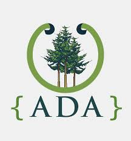
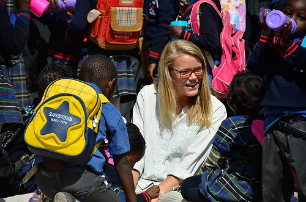
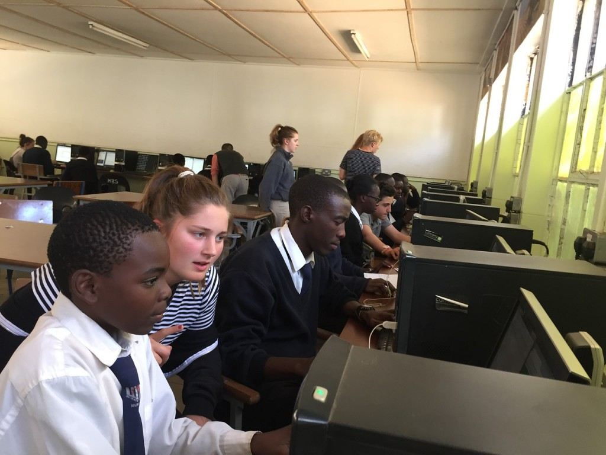
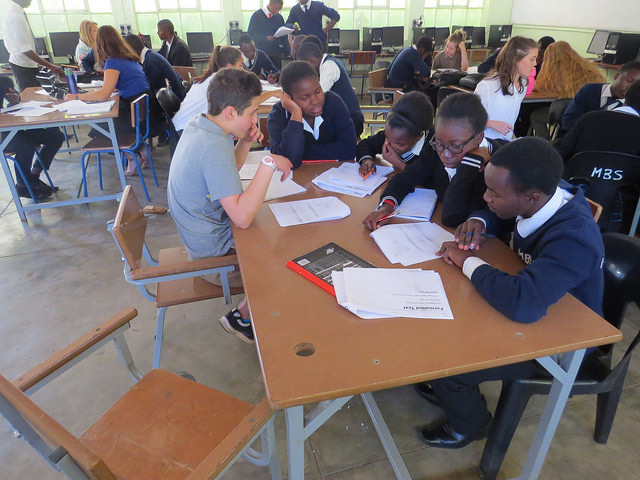
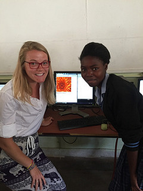
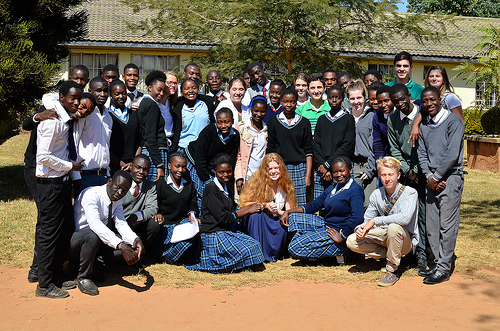
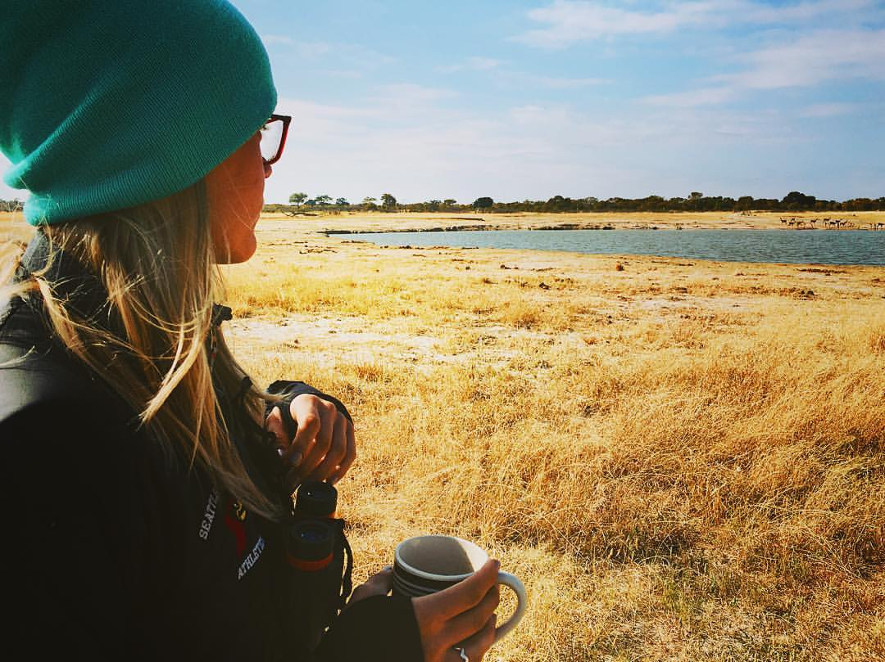

Discovering my Next Step
March 2017
I learned quickly that online, there is a plethora, if not an infinite, amount of resources to learn to code. While I was insanely busy with teaching, and and a part of me was scared to take on the challenge of learning to code out of fear that I wasn't smart enough, I refused to allow those excuses to win and get the best of me.
So every night, in between moments of grading and writing curriculum, I found and made time. I devoted myself to code.

I took classes online, attended even more Meetups, listened to podcasts, and consumed the world of tech. I would lose myself into my computer; looking up after what felt like a few minutes only to realize it had been hours. Prior to coding, I had become lulled into complacency within my career. I was good at it but bored. Most things came easily and it often even felt as though there wasn’t much more I could do to improve my craft. I’ve always identified as a forever learner, claiming to be someone who is dedicated to learning more from my students and their experiences. But coding reawakened my mind to what learning really feels like (and it was more fun than I ever imagined). Reflecting on my trip to Zambia, I recognize now that I did so much more learning on that trip than actual “teaching”. Over the years, I had become comfortable existing in the teacher role and had forgotten how thrilling it is to be on the opposite end of that equation.
A lust for expanding my own mind had been ignited and I refused to turn it off. I started researching coding bootcamps but felt overwhelmed by their costs.
I felt on the precipice of a big life change when I discovered Ada. I had been keeping a list of the pros and cons of bootcamps I had been researching. And all of the sudden, one came into my periphery that only had qualities on the pro side of the page. It's a place that combines my interest in coding and desire for a collaborative and safe learning environment that dedicates an entire year to the learning process. Suddenly, I felt ready to abandon that complacent life for something so much more. Only upon discovering Ada did I feel ready to take a leap, to leave my teaching career, and to pursue something more.
And thus, I made the choice to apply to Ada Developer’s Academy’s 8th cohort of students.
Networking in Seattle
February 2017
I returned home to Seattle from Zambia and rapidly jumped into the school year Chairing the English department and teaching 5 sections of 8th-grade Literature and Identity classes. But I knew that I needed to find a way to somehow fuel my new coding passion. Based on the recommendations of the Science and Math teachers at my school, I found Codecademy. I worked through an HTML/CSS course to build on what I had begun learning in Zambia. It felt good to review that material before diving into anything else.
Impulsively, I signed up for a Meetup I found online intended for “Coders in Seattle”. It was attended by thirty or so 40-50-year-old mostly white men… and myself. I thought back, recognized a pattern, and acknowledged the fact that the programming teachers at my school also fit the same exact build and makeup.
The thing is, as a girl who grew up playing ice hockey in Chicago, I identify as someone who is comfortable in a male dominated space. But this felt different. I felt a terrible sense of imposter syndrome. Was I welcome there? Did I know what I was getting myself into? Sure, I know how to check a guy twice my size into the boards to steal a puck, but this intellectual warfare would be different. I needed to develop and build foundational coding knowledge before I could feel fully confident engaging in conversations in settings such as this.

And that’s when my research brought me to the amazing community that supports women in tech in Seattle. I discovered the many resources and Meetups dedicated to supporting and encouraging women in the coding/tech world. I signed up for almost every event and group I could find that had “women” or “tech” in the title. My friends and fiancé did not see me for what felt like weeks at a time because I began averaging five Meetups a week! Luckily, they’re all amazingly supportive of my dream and I was having the time of my life meeting so many inspirational and powerful women in the industry. Sharing with them my interest in breaking into this world was hopeful and informative. I started to recognize a few faces at each event and felt myself becoming more comfortable and confident as I engaged in discussions with other liked minded women. This world was new and unfamiliar, but I felt welcomed.
I was carving out a place for myself in this community and it felt empowering to feel as though I belong.
I Fell in Love with Code
January 2017
I fell in love with coding because of the bridges it builds. And I don’t mean the bridging of two interoperating runtimes, but rather how it unites communities and people.

During the summer of 2016, I traveled with a small group of my students to Lusaka, Zambia where we partnered with local schools for a cultural and technological exchange over the course of four weeks. We brought donated computers and taught basic HTML, CSS, and JavaScript to teens who would then go on to teach their peers in hopes of positioning themselves ahead within the global job market.

I was there not as the code expert but as a mentor for my students. I was essentially the emotional support while my co-leader, Gabe, and my students peer taught the actual code.

Things were rocky at first. It felt as though there were too many cultural differences standing between my students and their Zambian peers to make a genuine connection. The initial lessons flopped because there was nothing connecting them to one another. I think my students, despite all of the prep work they had done building up to the trip, were nervous and uncomfortable in the foreign setting. Neither the Seattle nor the Lusakan students knew how to break down the cultural barrier that existed between them.

That all changed once they got behind a computer together. They began working collaboratively towards a common goal of building a website and all of that trepidation and nervousness vanished. Our Nyanjan, the local Zambian language, got better as we developed a particular vernacular to communicate commonly used and necessary phrases. And because many of the Zambian students were deaf (a common side-effect of Malaria there), we taught ourselves sign language back at our camp each night to further enhance and improve communication.

Suddenly, students on both sides of the communication barrier were able to discover shared commonalities. While building a website together they discovered shared interests, passions, and traits. Oh you like underwater animals too? Okay, cool me too. How about we create a website devoted to facts about the ocean together! The commonalities started out small but soon grew to encompass topics including family, struggles in school, personal relationships, parental pressures, etc. It was peer-to-peer learning and both parties were gaining rich experiences and forming genuine relationships.

The lessons expanded beyond code. The Lusakan students were equipped with better knowledge and tools that would set them apart in their applications to University. They were walking away from the program empowered with leverage in their fight for social, political, and economic equality. And the Seattle students learned a powerful lesson in empathy and experienced intense personal growth and maturation as they became individuals capable of thriving in new and perhaps uncomfortable environments. My students not only learned to code during their time in Zambia but used it as a tool to find commonalities and create deep and genuine connections.
Coding was the bridge between us all. Code provided a common language. It filled the gap. I fell in love coding and the endless opportunities it provided to tell unique narratives that forever linked lives together.
I was hooked. I had to learn more. I came home hungry to know more about programming.